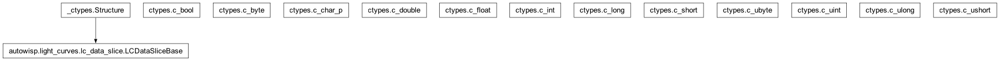
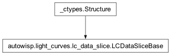

autowisp.light_curves.lc_data_slice module
Class Inheritance Diagram

Define a class holding a slice of LC data organize by source.
- class autowisp.light_curves.lc_data_slice.LCDataSliceBase[source]
Bases:
Structure
A time-slice of LC data to be shared between LC dumping processes.
- autowisp.light_curves.lc_data_slice.create_lc_data_slice_type(get_dtype, dataset_dimensions, max_dimension_size, max_mem)[source]
Return LCDataSliceBase sub-class configured to hold max LC data possible.
- Parameters:
get_dtype (callable) – A function which should return the datatype to use for the dataset corresponding to a given pipeline key.
dataset_dimensions – See
LCDataReader.dataset_dimensionsmax_dimension_size – See
LCDataReader.max_dimension_sizemax_mem – The maximum amount of memory instances are allowed to consume in bytes.
- Returns:
The class of a variable to use for lightcurve dumping
- int:
The number of frames that will fit into the structure.
- Return type:
LCDataSliceBase sub-class